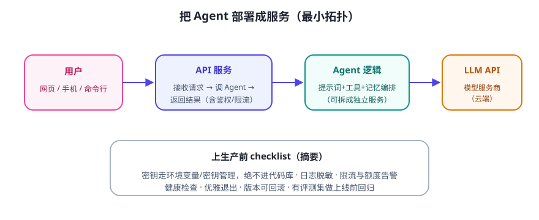

“部署”听起来吓人，本质就一句话：把你的 Agent 包成一个 HTTP 服务，让网页/手机能通过 URL 调用它。先在本机跑通，再考虑上云。
最小拓扑

分步走
- 把你的 Agent 逻辑包成一个函数：
def chat(user_input, history) -> str。先保证“函数能跑”，部署只是给函数加一层“网络壳”。 - 起一个本地 API 服务：用你熟悉的 Web 框架（如 Python 的 Flask/FastAPI）暴露一个
/chat接口，接收 JSON、返回 JSON。具体框架用法以官方文档为准。 - 加一个极简网页：一个输入框 + 聊天列表 + 一个 fetch 调用本地接口（几十行 HTML/JS 即可）。
- 本机验证：浏览器打开
http://127.0.0.1:端口，完整聊一轮。 - （可选）上云：部署到服务器/托管平台（需要账号与配置，超出本课范围；上生产前先看 Day 22 的安全清单）。
上线前必查清单
- 密钥只存在服务端环境变量，前端和代码库都没有。
- 接口有鉴权（哪怕是简单的口令/Token），不能裸奔公网。
- 有超时、限流、日志；错误信息不泄露内部细节。
- 有健康检查接口；升级可回滚；关键版本跑过评测集。
⚠️ 公网警告：把服务暴露到公网前，务必加鉴权和限流。你的 Agent 会调用 LLM、可能操作文件——被陌生人白嫖是小，被恶意利用是大。先在本机/内网玩熟。
✍️ 今日练习（约 30–60 分钟）
- 把 Day 27 的问答 Agent 包成
chat()函数（如果还没有）。 - 用你熟悉的框架起本地服务，用浏览器或命令行工具测
/chat接口。 - 写 3 行“部署笔记”：启动命令、依赖清单、遇到的一个坑。
📌 今日小结
部署本质给 Agent 函数加一层 HTTP“壳”
最小闭环网页 → API → Agent → LLM，本机先跑通
密钥铁律只在服务端，前端/代码库/日志都没有
公网红线鉴权 + 限流 + 日志 + 可回滚，缺一不上
明天预告：Agent 的安全与伦理专题——幻觉防护、提示注入、滥用风险，做负责任的开发者。